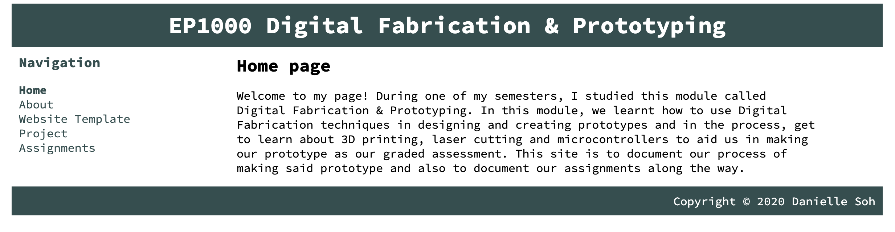

Computer Aided Design
We were introduced to another image manipulation editor GIMP as an alternative to Photoshop. As an exercise to warm up to the new software, we edited a profile picture of ours and place a different background behind.
Here is the link of where you can install GIMP on your desktop.
Process

When you accidentally delete a paragraph of text or want to “undo” whatever mistake you did but have already pushed it to the repository, you can follow these steps:

|
|

Here is the recovered text as of shown in the picture below: 